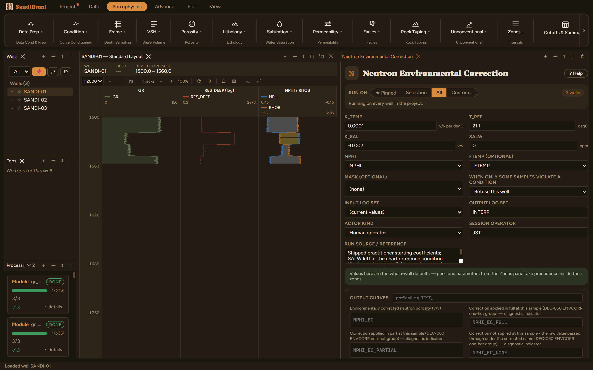

A linearized environmental correction for the neutron log: NPHI_EC = NPHI + K_TEMP·(FTEMP − T_REF) + K_SAL·(SALW/100000). Two terms, both about the difference between the chart reference conditions the tool was characterized at and the formation the log was actually run in.
The shipped coefficients are practitioner starting values. Replace them with values read from the applicable CNL chart for the tool in hand where one is available. SALW stays 0, the chart reference condition itself (fresh): until the study declares its formation salinity the salinity term is deliberately inert, rather than defaulted to somebody else's brine. Run Formation Temperature first: without FTEMP only the salinity term can apply.

On these wells: 3 clean. With FTEMP running ~98–101 °C against T_REF 21.1, the temperature term applies a small uniform shift; the salinity term contributes nothing at SALW = 0, by construction. Order matters across this shelf: environmental corrections come before the matrix conversion, because the equivalence charts assume corrected logs.